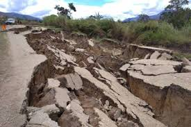

EARTHQUAKE
An earthquake (also known as a quake, tremor or temblor) is the shaking of the surface of the Earth, resulting from the sudden release of energy in the Earth's lithosphere that creates seismic waves. Earthquakes can range in size from those that are so weak that they cannot be felt to those violent enough to toss people around and destroy whole cities. The seismicity, or seismic activity, of an area is the frequency, type and size of earthquakes experienced over a period of time. The word tremor is also used for non-earthquake seismic rumbling.

At the Earth's surface, earthquakes manifest themselves by shaking and displacing or disrupting the ground. When the epicenter of a large earthquake is located offshore, the seabed may be displaced sufficiently to cause a tsunami. Earthquakes can also trigger landslides, and occasionally volcanic activity.
Effect of Earthquakes
The effects of earthquakes include, but are not limited to, the following:
Shaking and ground rupture
Shaking and ground rupture are the main effects created by earthquakes, principally resulting in more or less severe damage to buildings and other rigid structures. The severity of the local effects depends on the complex combination of the earthquake magnitude, the distance from the epicenter, and the local geological and geomorphological conditions, which may amplify or reduce wave propagation.
Landslides and avalanches
Earthquakes, along with severe storms, volcanic activity, coastal wave attack, and wildfires, can produce slope instability leading to landslides, a major geological hazard. Landslide danger may persist while emergency personnel are attempting rescue.
Fire
Earthquakes can cause fires by damaging electrical power or gas lines. In the event of water mains rupturing and a loss of pressure, it may also become difficult to stop the spread of a fire once it has started. For example, more deaths in the 1906 San Francisco earthquake were caused by fire than by the earthquake itself.
Tsunami
Tsunamis are long-wavelength, long-period sea waves produced by the sudden or abrupt movement of large volumes of water – including when an earthquake occurs at sea. In the open ocean the distance between wave crests can surpass 100 kilometers (62 mi), and the wave periods can vary from five minutes to one hour. Such tsunamis travel 600–800 kilometers per hour (373–497 miles per hour), depending on water depth. Large waves produced by an earthquake or a submarine landslide can overrun nearby coastal areas in a matter of minutes. Tsunamis can also travel thousands of kilometers across open ocean and wreak destruction on far shores hours after the earthquake that generated them.
Prediction
Earthquake prediction is a branch of the science of seismology concerned with the specification of the time, location, and magnitude of future earthquakes within stated limits.Many methods have been developed for predicting the time and place in which earthquakes will occur. Despite considerable research efforts by seismologists, scientifically reproducible predictions cannot yet be made to a specific day or month.
Forecasting
While forecasting is usually considered to be a type of prediction, earthquake forecasting is often differentiated from earthquake prediction. Earthquake forecasting is concerned with the probabilistic assessment of general earthquake hazard, including the frequency and magnitude of damaging earthquakes in a given area over years or decades.For well-understood faults the probability that a segment may rupture during the next few decades can be estimated.
Earthquake warning systems have been developed that can provide regional notification of an earthquake in progress, but before the ground surface has begun to move, potentially allowing people within the system's range to seek shelter before the earthquake's impact is felt.
Preparedness
The objective of earthquake engineering is to foresee the impact of earthquakes on buildings and other structures and to design such structures to minimize the risk of damage. Existing structures can be modified by seismic retrofitting to improve their resistance to earthquakes. Earthquake insurance can provide building owners with financial protection against losses resulting from earthquakes. Emergency management strategies can be employed by a government or organization to mitigate risks and prepare for consequences.